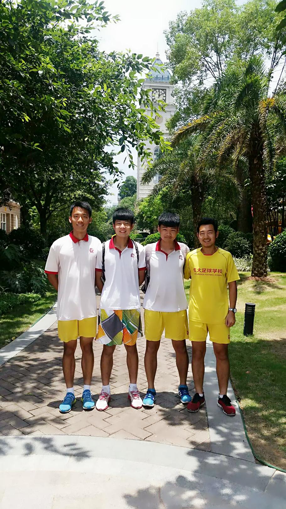
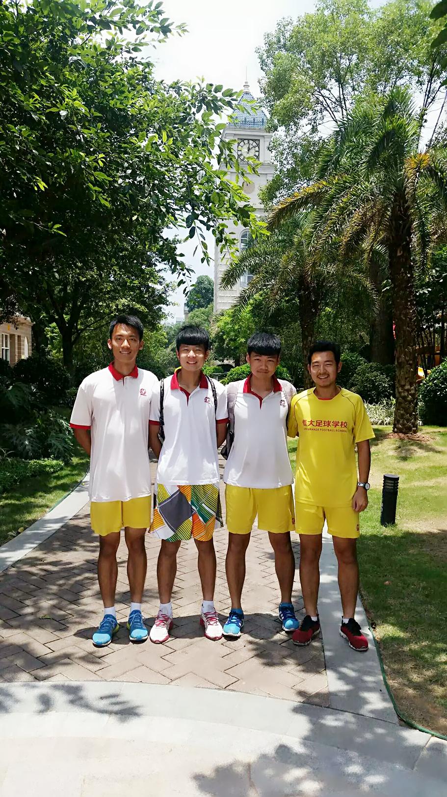
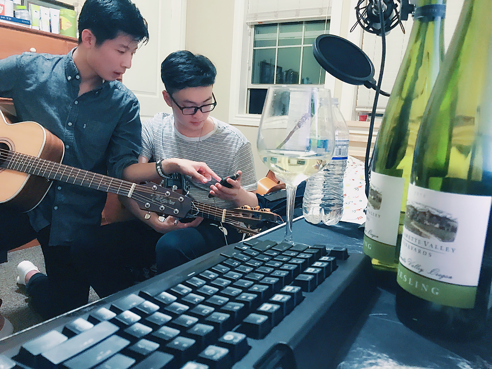
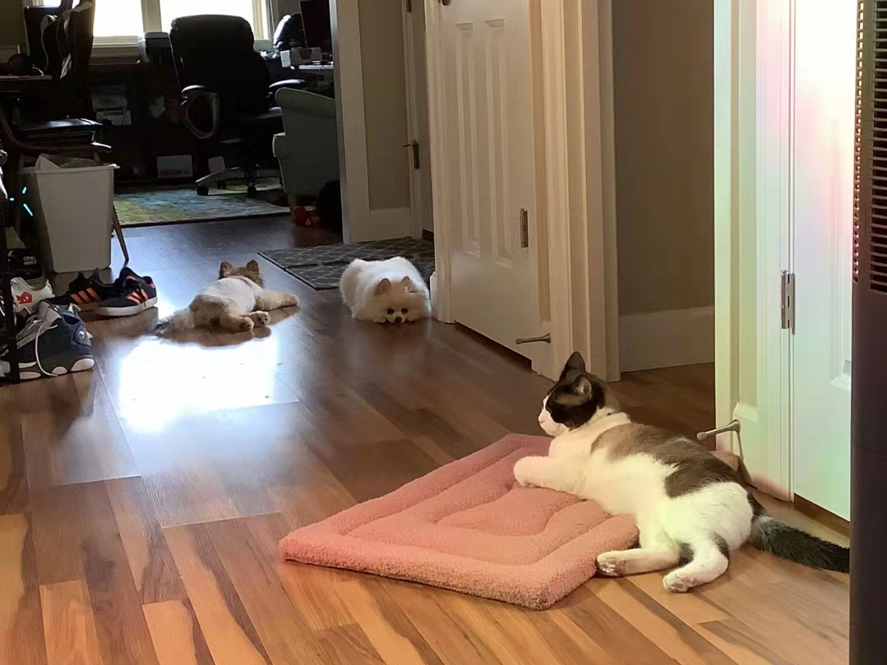

I used to study and play soccer at Evergrande Football School at China. That's where I took my highschool classes and learned to play soccer.
Playing sports inspiring people and It builds long lasting freindships.
 

Here is a link to Evergrand Football School official website if you want to learn more!
I play guitar. Its been 7 years for me to play guitar. I like to do it with my friends and sing songs together. I like to play chords together, and I also enjoy playing classic fingerstyle guitar. My favorate guitar piece is Hotel California by Eagles and Romance De Amor.
I have 6 pets in my house. 3 Puddles, 2 Pomeranian, and apparently one cat 😂 They all super friendly and I enjoy spending time watching them interact with flowers and dirt in the garden
